Generalist policies can learn a wide range of skills from diverse robot datasets. In order to solve or improve on challenging news tasks, we need a way to infer and invoke the appropriate actions from the policy's rich behavioral prior, especially when directly commanding the policy fails. We focus on flow matching generalists and propose Flow Reversal Steering (FRS): a method that takes suboptimal but "reasonable" actions, finds their latent noises by passing them through the flow policy in reverse, and maps them to nearby generalist action modes. We evaluate FRS across many simulated and real-world manipulation settings. First, FRS can turn coarse semantic guidance from humans or vision-language models (VLMs) into corresponding good robot actions, improving zero-shot control. These gains can be distilled with behavioral cloning by training an auxiliary policy to output noises that the generalist maps to good actions — showing up to 95% absolute task success rate boosts in under a minute of training. Finally, FRS enables policy improvement by bootstrapping reinforcement learning with semantic knowledge, improving on several tasks that standard RL fails to improve on.
Generalist flow-matching robot policies learn a rich prior over behaviors. These policies contain many skills needed for novel tasks — provided these appropriate behaviors are elicited. How can we use semantic knowledge to steer generalist policies towards sampling "reasonable" actions for new tasks?
We thus propose Flow Reversal Steering (FRS): a method for guiding generalist flow policies' action sampling by finding underlying noises that map to semantically-reasonable behaviors. By passing a coarse reference action — which captures roughly how the robot should move — through the flow policy in reverse, FRS finds the noise which approximately maps to the action. When subsequently denoised, FRS effectively finds a nearby good behavioral mode from the generalist's prior that is similar to the reference.
# Sample action from flow policy (K integration steps) x ~ N(0, I) # Sample noise dt ← 1 / K for t in 0 … 1: # K forward steps, size dt x ← x + dt·vθ(x, t) return x # action sample
# Steer w/ reference action a_ref (K integration steps) x ← a_ref dt ← 1 / K for t = 1 … 0: # reverse the flow → noise x ← x − dt·vθ(x, t) for t = 0 … 1: # denoise → nearby mode x ← x + dt·vθ(x, t) return x # refined, in-distribution
In turn, this allows semantic reasoners, like humans or VLMs, to guide the policy towards task-relevant good behaviors. The noises and actions produced by FRS can also be used for policy learning and improvement, especially via noise-space behavioral cloning and reinforcement learning.
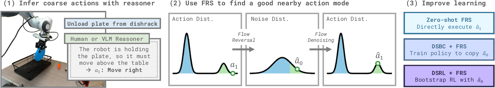
Overview of the FRS pipeline.
We demonstrate FRS using state-of-the-art π0.5 vision-language-action models (VLAs) in both simulated LIBERO and real-world DROID manipulation tasks. We present three ways to use FRS:
Flow reversal maps data to noise by integrating the flow field backward in time. As flow matching learns a deterministic velocity field, there is a fixed correspondence between noise and data, so the resulting noises denoise back to the original data points.
In contrast, the forward diffusion process linearly interpolates data with Gaussian noise. While this yields the same marginal distributions as flow matching at all times, it does not preserve the exact data-noise correspondence, so the noised points do not necessarily denoise back to the original data.
Example LIBERO frames with an interactive 3D view of the cardinal flow-reversal steering directions (arrows) and the resulting steered action chunks (dots). Black dots represent a sample from the VLA without steering, showing that the steered actions do differ from what the VLA usually would output. Three frames are shown per task across the rollout. All actions and steering are done with a π0.5 VLA.
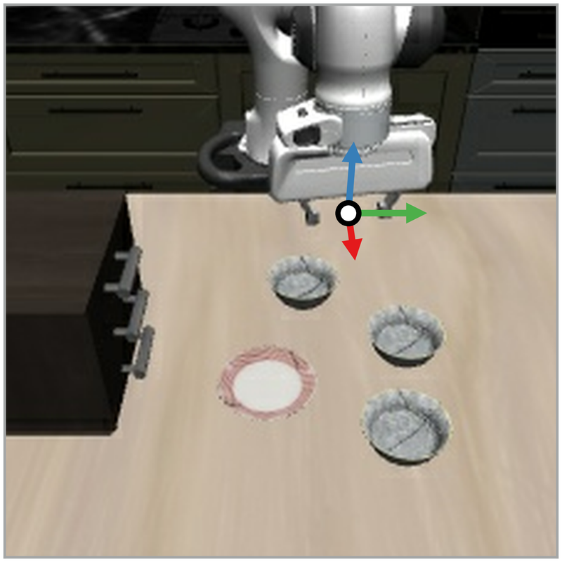
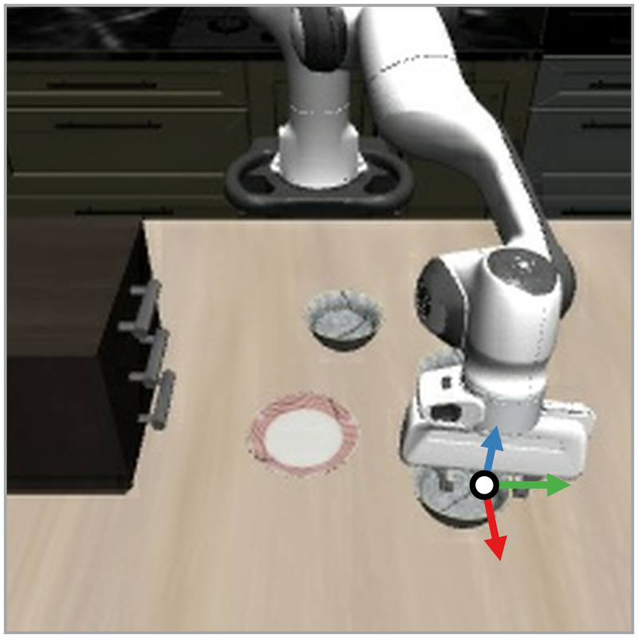
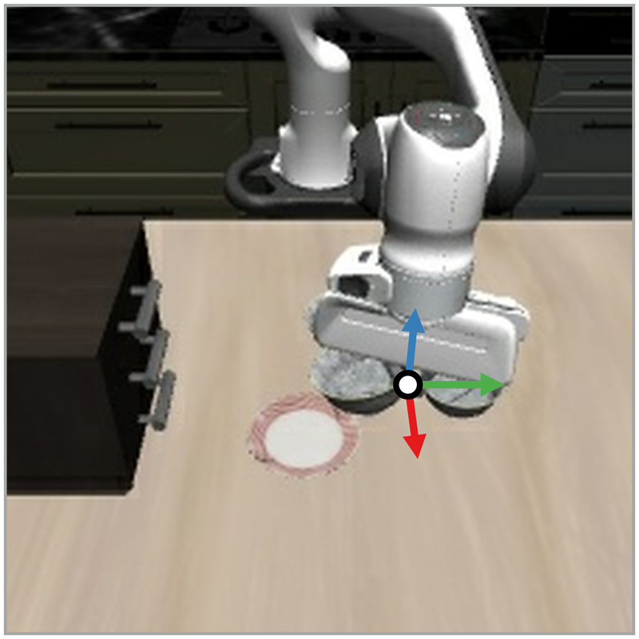
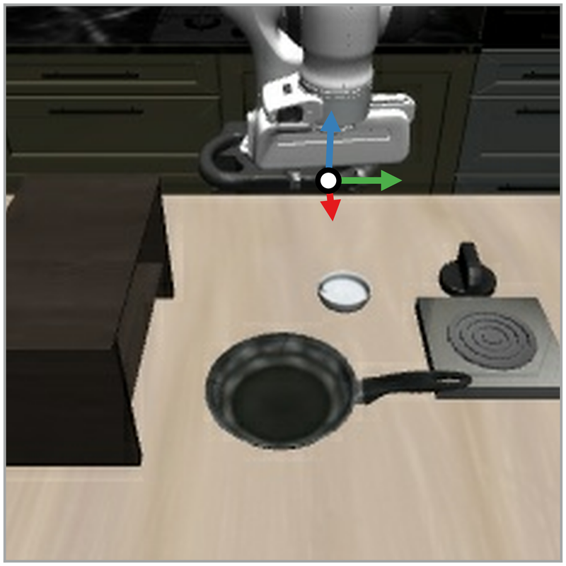
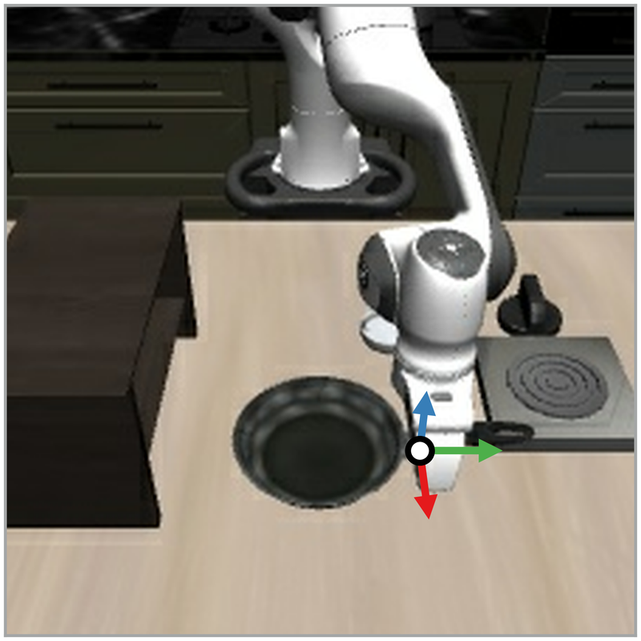
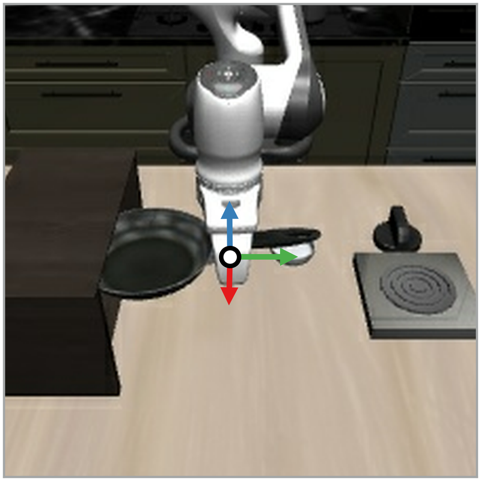
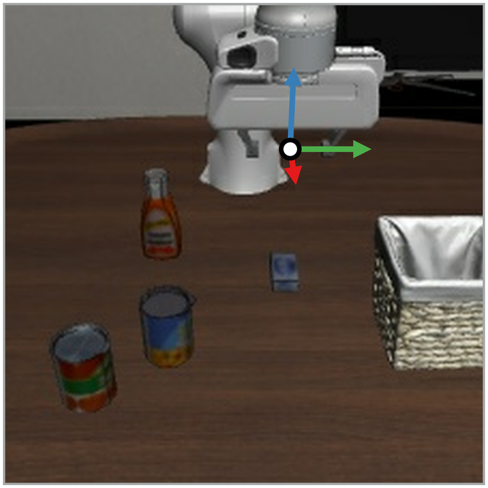
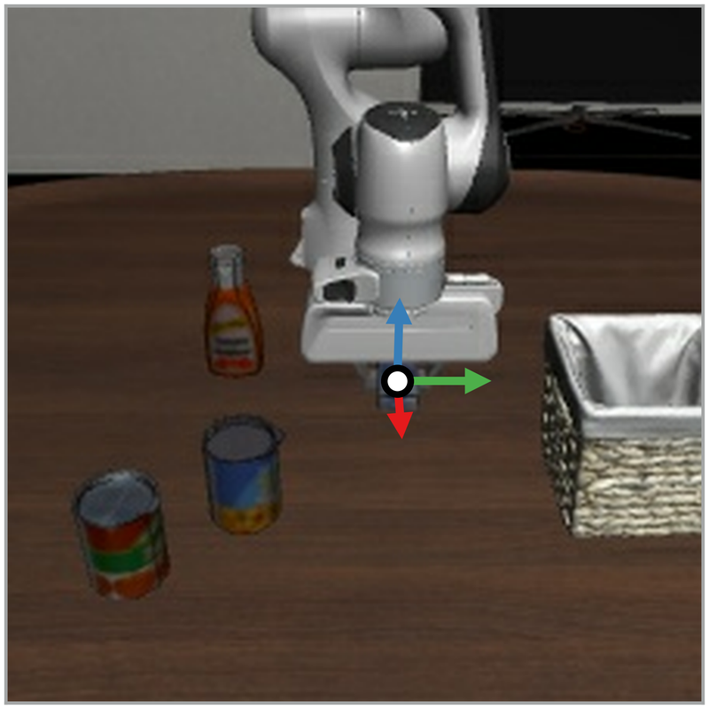
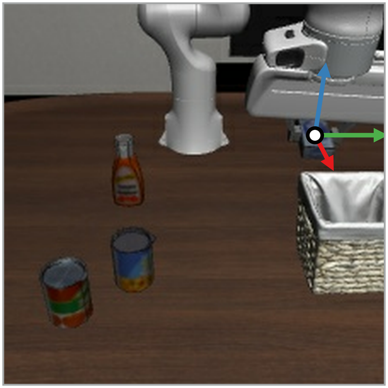
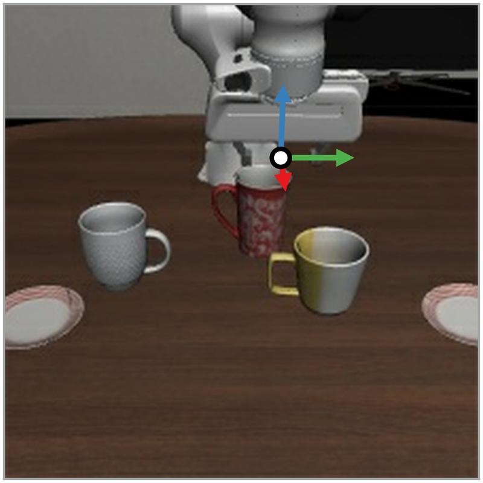
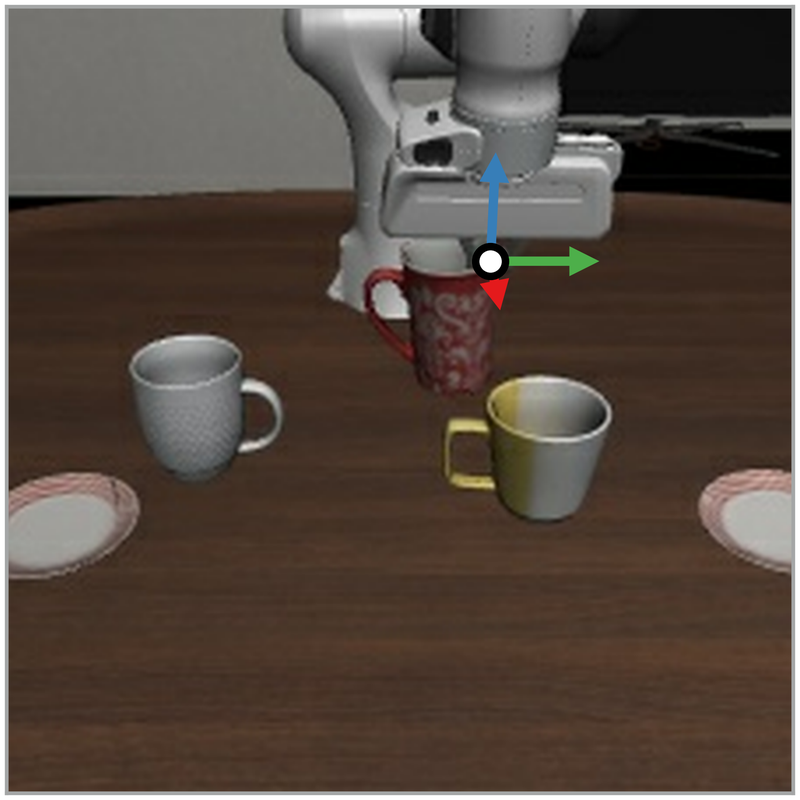
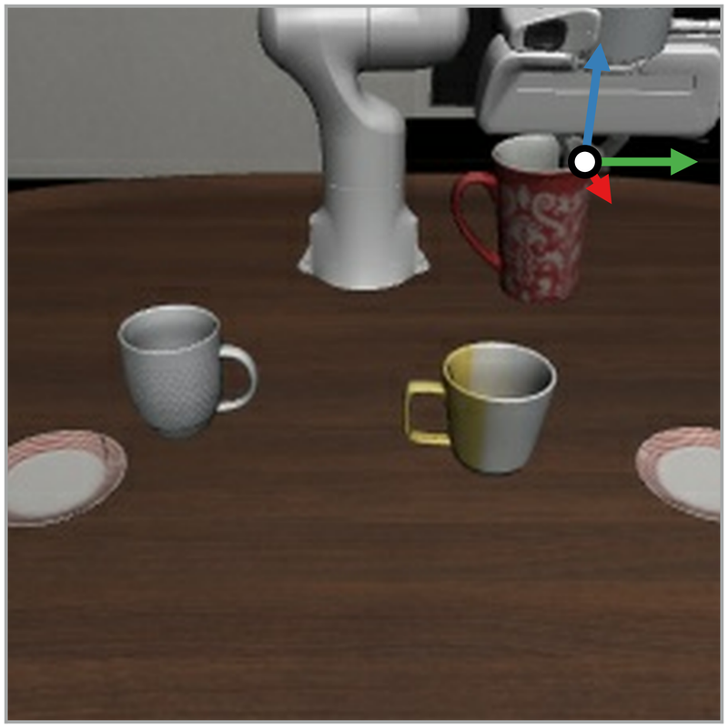
FRS converts coarse actions into better fine-grained actions from the generalist policy's prior. The simplest way to use FRS is to directly execute these refined actions without any training. The zero-shot FRS inference loop involves: (1) querying a reasoner (e.g. human or VLM) for a coarse reference action, (2) passing the reference action through flow reversal to find the corresponding noise, and (3) denoising this noise to get the final action to execute at each step.
We make use of the Gemini-ER-1.6 VLM to scalably produce semantically-meaningful coarse directional reference actions for evaluation in the LIBERO simulator.
Zero-shot FRS allows a VLM to guide the generalist policy based on its semantic reasonings, raising performance across LIBERO.
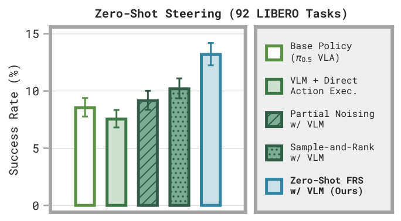
Zero-shot FRS outperforms the base VLA across LIBERO. On hard tasks where the base policy achieves ≤ 2% success, 11 of 42 tasks gain at least 10% absolute success rate with zero-shot FRS. Other steering baselines only boost 3 or 4 such tasks in this way, suggesting FRS is better in low-success regimes which are especially hard for generalist improvement. FRS also outperforms directly executing VLM actions, showing that flow reversal refines the coarse reference actions, rather than simply reconstructing them.
Flow policies can be steered via small auxiliary noise policies, which output noises which the generalist flow policy maps to good actions. However, finding good noises can be challenging — past works like Diffusion Steering via Reinforcement Learning (DSRL) require trial-and-error and Q-learning to find good noises. In contrast, flow reversal rapidly and scalably identifies good noises when simply given reference actions.
Thus, flow reversal enables training noise-steering policies via supervised learning, rather than expensive reinforcement learning. We naturally call this Diffusion Steering via Behavioral Cloning (DSBC).
Noise policies trained with DSBC can steer the generalist VLA on real-world DROID tasks.
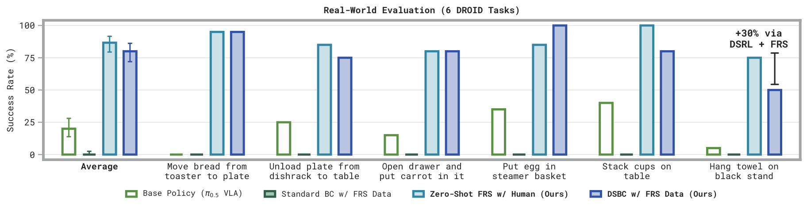
DSBC improves real-world task performance by training on FRS data.
DSBC trained on 10 successful human-steered FRS rollouts per task significantly outperforms the base π0.5 VLA on six DROID tasks. Standard BC with an equivalent flow policy completely fails in this data regime.
Offline DSBC (Ours)
Base VLA
Standard Flow BC
Offline DSBC (Ours) solves the precise tape-hanging task, where the base VLA and standard flow BC fail.
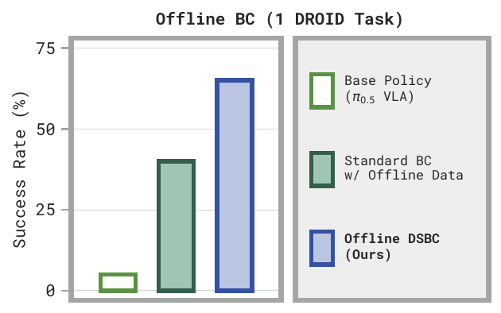
Alternatively, DSBC can also be used with standard offline robotic demonstration data, e.g., collected via teleoperation. Flow reversal can augment each frame with the noise that approximately maps to the corresponding action chunk, then the DSBC noise policy can be trained on this augmented dataset. We demonstrate this on a more precise tape hanging task, training on 20 teleoperated demonstrations.
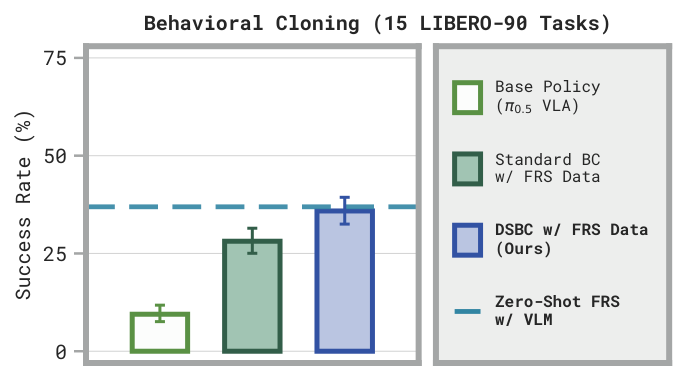
We also evaluate DSBC on LIBERO, where it distills the performance gains of zero-shot VLM FRS on 15 tasks, outperforming standard BC. DSBC is also highly efficient: each noise policy trains in under 1 minute using ~1 GB of GPU memory, without loading the full VLA.
We hypothesize that when the noise policy enters out-of-distribution states, the VLA maps its outputs back to reasonable in-distribution actions, providing implicit robustness against compounding error.
Bootstrapping DSRL with FRS trajectories enables faster learning and higher final success on hard tasks. We propose two simple augmentations for DSRL + FRS: (1) prefilling the replay buffer with zero-shot FRS rollouts and (2) adding a BC auxiliary loss on successful trajectories' noise actions.
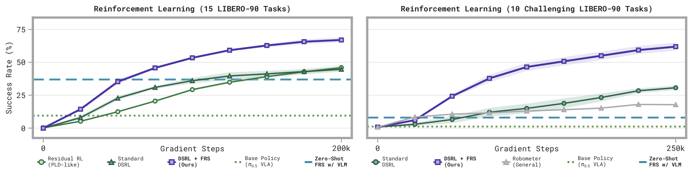
Left: DSRL + FRS on 15 tasks with effective zero-shot steering.
Right: on 10 hard tasks where FRS and the base policy both perform poorly, using even one FRS success drastically improves RL.
On 15 LIBERO-90 tasks, it learns faster and reaches higher final success than standard DSRL and PLD-style residual RL. On 10 harder tasks where the base VLA gets ~0% and zero-shot FRS reaches only 8%, even a single successful steered trajectory enables DSRL to learn substantially faster and better. By directing the learner toward semantically-meaningful behaviors early in training, DSRL + FRS improves performance in the sparse-reward regime where standard generalist RL struggles.
Step 0
Step 50K
Step 100K
Step 150K
Step 200K
As an example, DSRL + FRS learns on Task 52: pick up the milk and put it in the basket, whereas standard DSRL completely fails, as the base VLA struggles to solve the task without semantic steering from VLMs.
@article{tang2026frs,
author = {Andy Tang and William Chen and Andrew Wagenmaker and Chelsea Finn and Sergey Levine},
title = {Improving Robotic Generalist Policies via Flow Reversal Steering},
year = {2026},
}